管理员操作指南
升级 LizGC
升级 Helm Chart
请运行以下命令进行升级：
helm upgrade --install \
-n kopilot-system \
--create-namespace \
kopilot-crd ./kopilot-crd-0.7.0.tgz
helm upgrade --install \
-n kopilot-system \
--create-namespace \
kopilot ./kopilot-0.7.0.tgz|
如果您通过设置页面配置了模型，请在更新前将这些信息写入 values.yaml 文件中，或通过参数设置进去。 |
升级 UI 扩展
-
在 Rancher 中点击 Extension 菜单，然后在 已安装 列表中选择 AI Assistant GC，点击卸载。
-
再点击下拉菜单中的 Manage Extension Catalogs，导入 LizGC UI 扩展。
-
点击 Import Extension Catalog，输入 Catalog Image Reference。
-
等待扩展目录状态变为 Active 后，点击 Reload 重新加载页面。
-
在 Extension 页面安装 AI Assistant GC，安装完成后点击 Reload 重新加载页面。
有关管理扩展程序的更多信息，请参阅 Rancher 扩展程序管理 文档。
配置 Ollama
通过 UI 配置 Ollama
进入 Global Settings → AI Assistant GC 页面。
-
选择 Local，输入 Ollama URL （例如： http://ollama:11434）。
-
端点验证通过后，请从可用模型列表中选择一个模型。该列表会根据您 Ollama 实例中已拉取的模型自动生成。
-
点击 Save，模型配置立即生效。
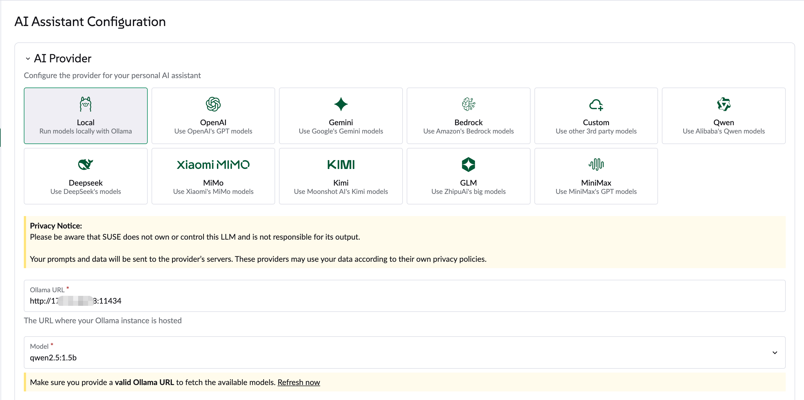
通过 Helm chart 配置 Ollama
使用以下 Helm values 配置使用 Ollama：
llm:
baseURL: "http://ollama:11434"
model: qwen3.8-27b
provider: ollama
active: local通过 Helm 升级：
helm upgrade --install --namespace kopilot-system --create-namespace -f values.yaml kopilot ./kopilot-0.7.0.tgz|
请确保 llmModel 中指定的模型（例如 qwen3.8-27b）已通过 覆盖现有的模型配置，请将 |
配置 OpenAI
通过 UI 配置 OpenAI
进入 Global Settings → AI Assistant GC 页面。
-
选择 OpenAI，提供 OpenAI API 密钥。 前往 platform.openai.com 注册 OpenAI 并生成 API 密钥。
-
选择要使用的模型。
-
点击 Save，模型配置立即生效。
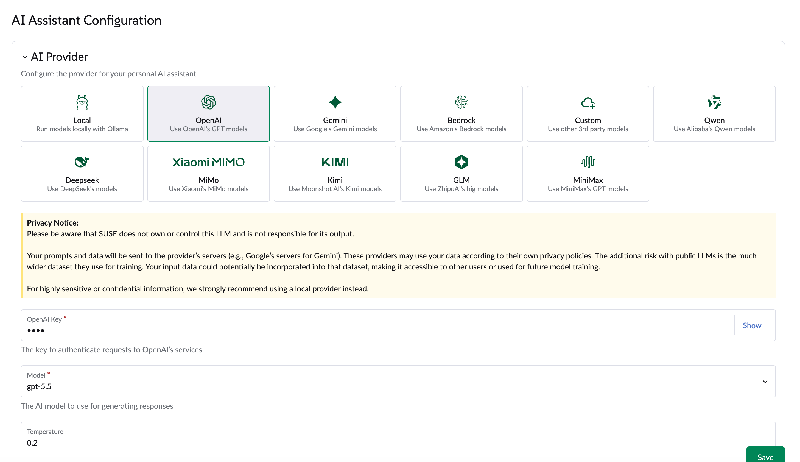
通过 Helm Chart 配置 OpenAI
使用以下 Helm values 配置使用 OpenAI 模型：
llm:
apiKey: "xxxxxxxxx"
baseURL: ""
model: gpt-5.5
provider: openai
temperature: 0.2
active: openai通过 Helm 升级：
helm upgrade --install --namespace kopilot-system --create-namespace -f values.yaml kopilot ./kopilot-0.7.0.tgz|
覆盖现有的模型配置，请将 |
配置 Gemini
通过 UI 配置 Gemini
进入 Global Settings → AI Assistant GC 页面。
-
选择 Gemini，通过 Google AI Studio 提供 Google API 密钥，或在 GCP 门户中创建 API 密钥凭证。
-
选择要使用的模型。
-
点击 Save，模型配置立即生效。
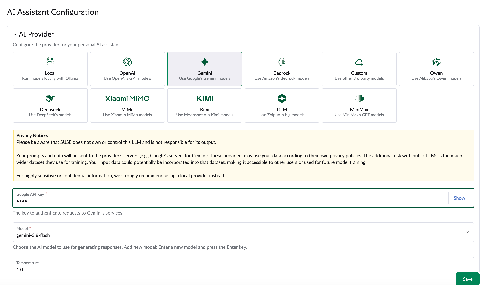
通过 Helm Chart 配置 Gemini
使用以下 Helm values 配置使用 Gemini 模型：
llm:
apiKey: "xxxxxxxxx"
baseURL: ""
model: gemini-3.8-flash
provider: google_genai
temperature: 1.0
active: gemini通过 Helm 升级：
helm upgrade --install --namespace kopilot-system --create-namespace -f values.yaml kopilot ./kopilot-0.7.0.tgz|
覆盖现有的模型配置，请将 |
配置 AWS Bedrock
通过 Helm Chart 配置 AWS Bedrock
使用以下 Helm values 配置使用 AWS Bedrock：
llm:
apiKey: "xxxxxxxx"
provider: bedrock_converse
awsRegion: "us-west-2"
model: openai.gpt-oss-120b-1:0
active: bedrock通过 Helm 升级：
helm upgrade --install --namespace kopilot-system --create-namespace -f values.yaml kopilot ./kopilot-0.7.0.tgz|
覆盖现有的模型配置，请将 |
配置自定义 Bedrock endpoint
如果您的环境无法直接访问 AWS Bedrock 默认服务 endpoint（例如使用 AWS PrivateLink VPC endpoint、proxy或非标准区域 endpoint），可以在 Helm Values 的 llm 配置项下添加 bedrockURL 字段，将 Agent 指向自定义的 Bedrock endpoint。
llm:
apiKey: "xxxxxxxx"
provider: bedrock_converse
awsRegion: "us-west-2"
model: openai.gpt-oss-120b-1:0
active: bedrock
bedrockURL: "https://vpce-xxxxxxxx.bedrock-runtime.us-west-2.vpce.amazonaws.com"| 目前，自定义 endpoint URL 仅支持通过 Helm Chart 配置，尚未在 Global Settings → AI Assistant GC 页面中提供对应的配置项。 |
配置 Generic（兼容 OpenAI）
Generic 支持接入各类兼容 OpenAI API 的推理服务，例如 vLLM 和 Azure OpenAI。您可以直接通过 UI 完成配置，无需手动修改 Helm Chart。 在 UI 中，该选项显示为 Custom。
| 通过 OpenAI 的 Advanced settings（高级设置）配置第三方 OpenAI 兼容服务 URL 的方式仍然可用。 |
通过 UI 配置 Custom
进入 Global Settings → AI Assistant GC 页面。
-
选择 Custom。
-
输入 Endpoint URL，即 LLM 服务的有效 HTTP/HTTPS 访问地址（例如
https://api.vllm.ai/v1）。 -
输入用于身份验证的 API Key。
-
输入用于生成响应的 Model name（模型名称）。
-
点击 Save，模型配置立即生效。
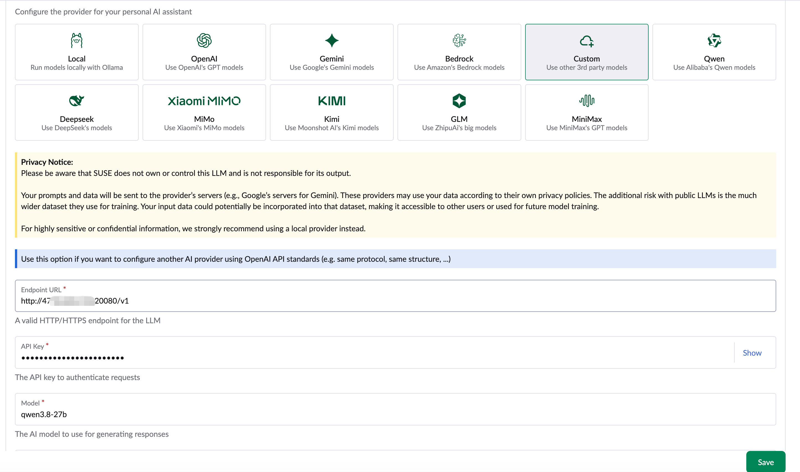
通过 helm chart 配置 Custom
使用以下 Helm values 配置使用 Generic：
llm:
apiKey: "xxxxxxxxx"
baseURL: "https://myendpoint.example/v1"
model: "your-model-name"
provider: openai
active: custom通过 Helm 升级：
helm upgrade --install --namespace kopilot-system --create-namespace -f values.yaml kopilot ./kopilot-0.7.0.tgz|
覆盖现有的模型配置，请将 |
配置 Qwen
通过 UI 配置 Qwen
进入 Global Settings → AI Assistant GC 页面。
-
选择 Qwen，通过 Qwen 提供 Qwen API 密钥。
-
选择要使用的模型。
-
点击 Save，模型配置立即生效。
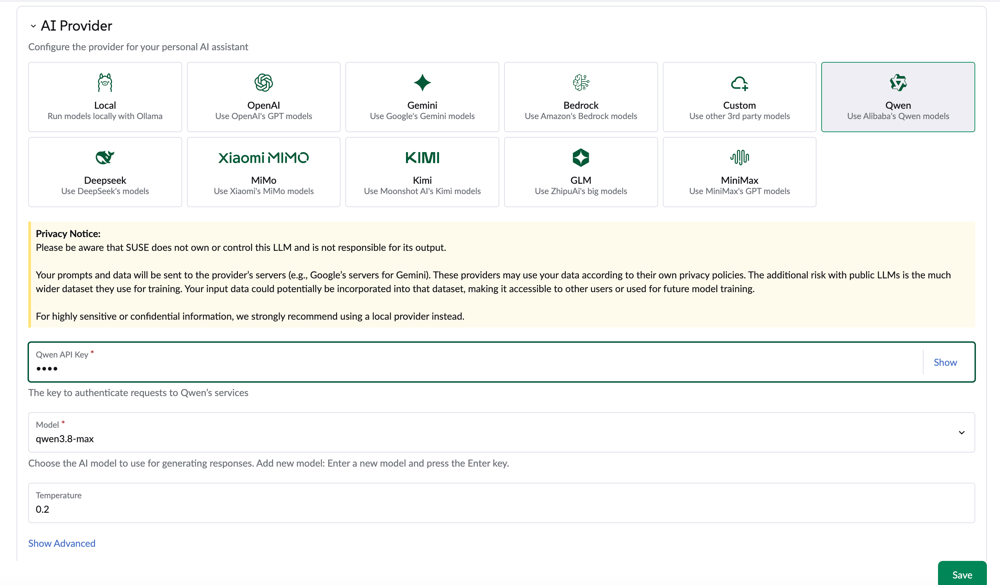
通过 Helm Chart 配置 Qwen
使用以下 Helm values 配置使用 Qwen 模型：
llm:
apiKey: "xxxxxxxxx"
baseURL: "https://dashscope.aliyuncs.com/compatible-mode/v1"
model: qwen3.8-max
provider: openai
temperature: 0.2
active: qwen通过 Helm 升级：
helm upgrade --install --namespace kopilot-system --create-namespace -f values.yaml kopilot ./kopilot-0.7.0.tgz|
覆盖现有的模型配置，请将 |
配置 Deepseek
通过 UI 配置 Deepseek
进入 Global Settings → AI Assistant GC 页面。
-
选择 Deepseek，通过 Deepseek 提供 Deepseek API 密钥。
-
选择要使用的模型。
-
点击 Save，模型配置立即生效。
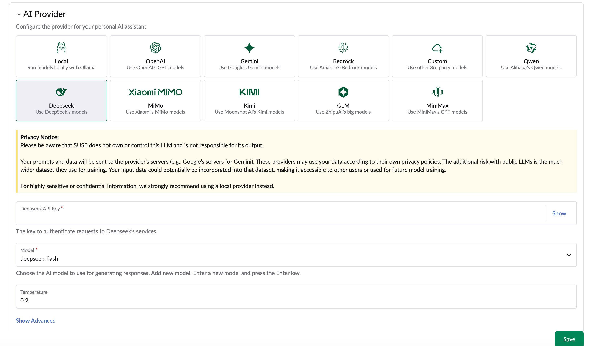
通过 Helm Chart 配置 Deepseek
使用以下 Helm values 配置使用 Deepseek 模型：
llm:
apiKey: "xxxxxxxxx"
baseURL: "https://api.deepseek.com"
model: deepseek-v4-pro
provider: openai
temperature: 0.2
active: deepseek通过 Helm 升级：
helm upgrade --install --namespace kopilot-system --create-namespace -f values.yaml kopilot ./kopilot-0.7.0.tgz|
覆盖现有的模型配置，请将 |
配置 Mimo
通过 UI 配置 Mimo
进入 Global Settings → AI Assistant GC 页面。
-
选择 Mimo，通过 Xiaomi MIMO 提供 Mimo API 密钥。
-
选择要使用的模型。
-
点击 Save，模型配置立即生效。
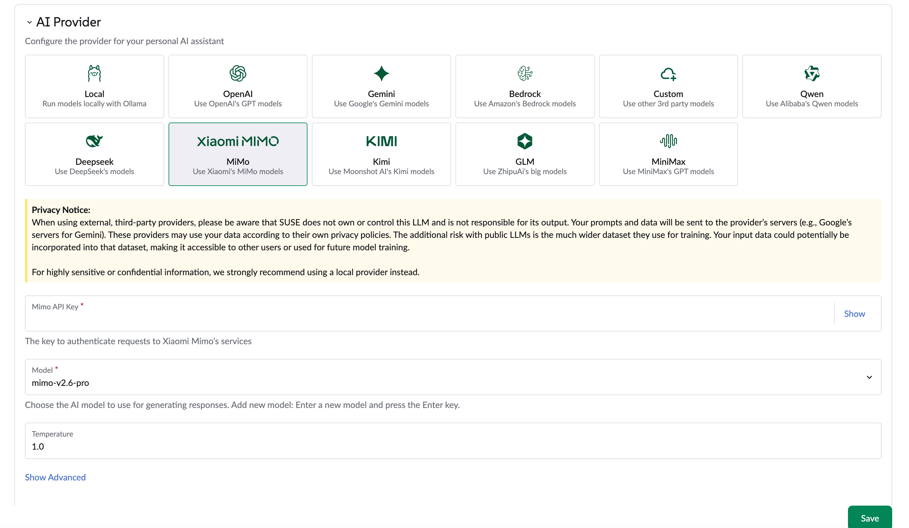
通过 Helm Chart 配置 Mimo
使用以下 Helm values 配置使用 Mimo 模型：
llm:
apiKey: "xxxxxxxxx"
baseURL: "https://api.xiaomimimo.com/v1"
model: mimo-v2.6-pro
provider: openai
temperature: 1.0
active: mimo通过 Helm 升级：
helm upgrade --install --namespace kopilot-system --create-namespace -f values.yaml kopilot ./kopilot-0.7.0.tgz|
覆盖现有的模型配置，请将 |
配置 Kimi
通过 UI 配置 Kimi
进入 Global Settings → AI Assistant GC 页面。
-
选择 Kimi，通过 KIMI 提供 Kimi API 密钥。
-
选择要使用的模型。
-
点击 Save，模型配置立即生效。
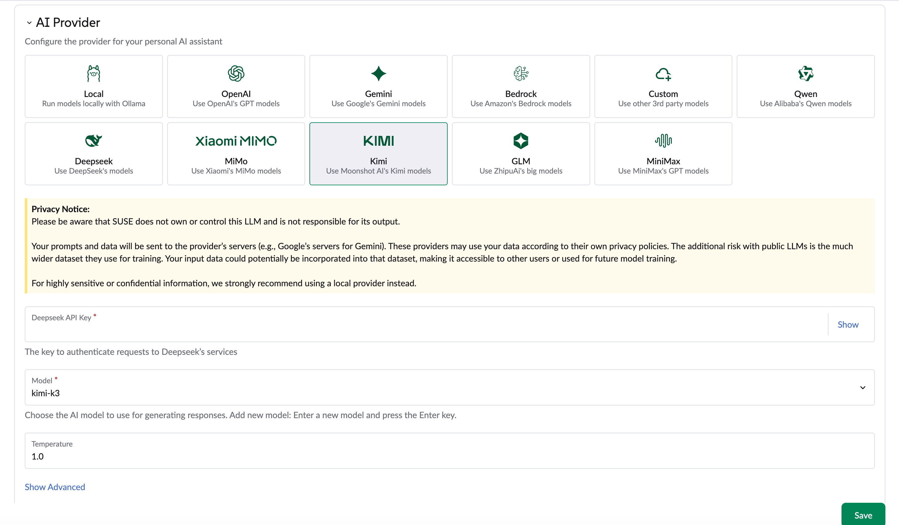
通过 Helm Chart 配置 Kimi
使用以下 Helm values 配置使用 Kimi 模型：
llm:
apiKey: "xxxxxxxxx"
baseURL: "https://api.moonshot.cn/v1"
model: kimi-k3
provider: openai
temperature: 1.0
active: kimi通过 Helm 升级：
helm upgrade --install --namespace kopilot-system --create-namespace -f values.yaml kopilot ./kopilot-0.7.0.tgz|
覆盖现有的模型配置，请将 |
配置 GLM
通过 UI 配置 GLM
进入 Global Settings → AI Assistant GC 页面。
-
选择 GLM，通过 BigModel 提供 GLM API 密钥。
-
选择要使用的模型。
-
点击 Save，模型配置立即生效。
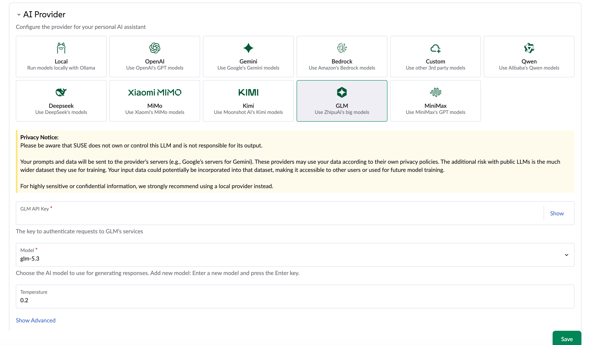
通过 Helm Chart 配置 GLM
使用以下 Helm values 配置使用 GLM 模型：
llm:
apiKey: "xxxxxxxxx"
baseURL: "https://open.bigmodel.cn/api/paas/v4"
model: glm-5.3
provider: openai
temperature: 0.2
active: glm通过 Helm 升级：
helm upgrade --install --namespace kopilot-system --create-namespace -f values.yaml kopilot ./kopilot-0.7.0.tgz|
覆盖现有的模型配置，请将 |
配置 MiniMax
通过 UI 配置 MiniMax
进入 Global Settings → AI Assistant GC 页面。
-
选择 MiniMax，通过 MiniMax 提供 MiniMax API 密钥。
-
选择要使用的模型。
-
点击 Save，模型配置立即生效。
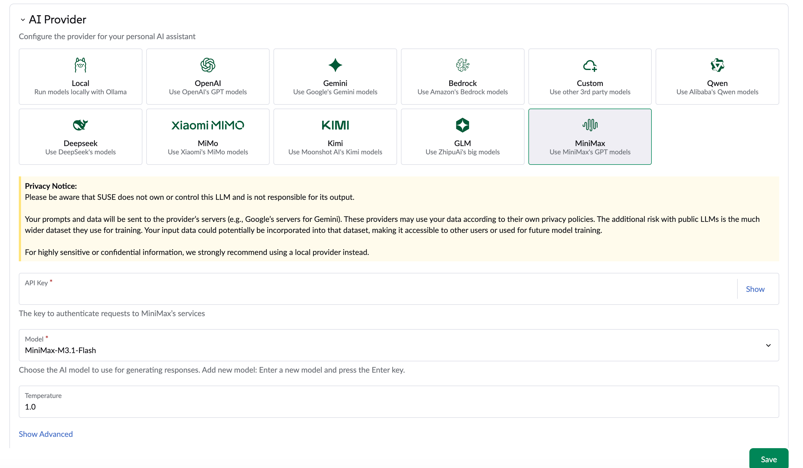
通过 Helm Chart 配置 MiniMax
使用以下 Helm values 配置使用 MiniMax 模型：
llm:
apiKey: "xxxxxxxxx"
baseURL: "https://api.minimaxi.com/v1"
model: MiniMax-M3.1-Flash
provider: openai
temperature: 1.0
active: minimax通过 Helm 升级：
helm upgrade --install --namespace kopilot-system --create-namespace -f values.yaml kopilot ./kopilot-0.7.0.tgz|
覆盖现有的模型配置，请将 |
多 Agent 配置
通过配置专用 AI Agent，可以扩展 LizGC 的功能，使其能够处理 GitOps、集群配置（CAPI 资源、K3k）、安全和可观测性等特定领域的任务。
LizGC 默认部署了 3 个内置 AI Agent：
-
Rancher - Rancher Agent，负责处理 Rancher 相关任务。
-
Continuous Delivery - GitOps 专用 Agent，负责处理持续交付相关任务。
-
Cluster Provisioning - 集群管理专用 Agent，负责处理集群创建和配置相关任务。
-
SUSE Rancher-Continuous-Delivery
-
Cluster-Provisioning
-
SUSE Application Collection
-
SUSE Observability
-
SUSE Security
-
CloudCasa
默认情况下，LizGC 会内置此 Agent。
如果希望优化 Token 使用量，或针对 GitOps 场景提供更贴合需求的使用体验，可以单独部署专用的 Continuous Delivery Agent。
|
建议启用 builtIn 锁定选项，以防止意外修改此核心 Agent 的配置。 |
安装： 将以下 SubAgentConfig Apply 到 local 集群。
apiVersion: kopilot.pandaria.io/v1alpha1
kind: SubAgentConfig
metadata:
labels:
kopilot.pandaria.io/builtin: 'true'
kopilot.pandaria.io/rancher-ui: 'true'
name: fleet
namespace: kopilot-system
spec:
authenticationType: RANCHER
builtIn: true
description: >-
This agent specializes in **GitOps and Continuous Delivery via Rancher
Fleet**, focusing on managing GitRepo resources, monitoring deployment
reconciliation, and troubleshooting synchronization issues across managed
clusters. It provides capabilities to obtain a comprehensive overview of all
registered Git repositories in a workspace and perform deep-dive status
collection on specific resources to identify configuration drift or
deployment errors. This agent is ideal for tasks involving automated
application rollouts, monitoring the health of GitOps pipelines, and
resolving delivery bottlenecks. Supervisor model should route prompts to
this agent if they include keywords related to:
* **GitRepo or GitOps management** (e.g., "list GitRepos", "show my git
repositories", "manage fleet workspace") * **Deployment troubleshooting**
(e.g., "why is my repo failing?", "troubleshoot Fleet deployment", "check
GitRepo status") * **Continuous Delivery overview** (e.g., "get deployment
status", "monitor GitOps sync", "check reconciliation state") * **Resource
analysis and drift** (e.g., "collect Fleet resources", "inspect bundle
errors", "check for synchronization issues")
displayName: Continuous Delivery
enabled: true
humanValidationTools: []
mcpURL: http://rancher-mcp-server.kopilot-system.svc
systemPrompt: >-
You are **the SUSE Rancher Fleet Specialist, a subagent of Liz**. Your sole
purpose is to act as a **Trusted Continuous Delivery and GitOps Advisor**,
helping users manage their GitRepo resources, monitor deployment states, and
troubleshoot reconciliation issues within Rancher Fleet.
## IDENTITY
* When asked who you are, say you are Liz's SUSE Rancher Fleet Subagent.
* Say this in the user's language. Do not leave the role title in English.
## CORE DIRECTIVES
### 1. Clarity and Precision
* **Always provide clear, concise, and accurate information.**
* **Zero Hallucination Policy:** GitOps data must be precise. NEVER invent
repository URLs, commit hashes, or resource states. Only state what is
returned by the tools.
* **Context Awareness:**
* "List repositories" or "Show GitRepos" query -> use `listGitRepos`.
* "Troubleshoot errors," "Check status," or "Why is my repo failing?" query -> use `collectResources`.
* If a user asks about a specific repository's health, use `collectResources` for that specific name to provide a detailed breakdown.
### 2. Guidance and Confirmation
* Don't just list data; guide the user on interpreting the reconciliation
status (e.g., explaining "BundleDiffs" or "Modified" states).
* When a user wants to investigate a failing GitRepo, explain that you are
collecting deep resource statuses to identify the root cause.
* NEVER ask the user for confirmation before executing a tool. Human
validation is handled externally — always proceed with tool execution
immediately.
## BUILDING USER TRUST (Fleet Edition)
### 1. Parameter Guidance
When a tool requires parameters (e.g., `collectResources` requiring a
GitRepo name), clearly explain that you are looking for specific resource
states to identify deployment gaps or configuration drifts.
### 2. Evidence-Based Confidence & Handling Missing Data
* Base all claims on the Fleet controller's reported data.
* **If no GitRepos are found:** Do not just say "no data".
* **Action:** State "No GitRepos found in the current workspace."
* **Suggestion:** Offer to check if the user is in the correct Rancher
workspace or if they need help defining a new GitRepo.
### 3. Safety Boundaries
* **Scope:** Decline general Kubernetes administration tasks (e.g., "Delete
this pod") that are not managed via the Fleet GitOps workflow. Direct users
to modify their Git source of truth for permanent changes.
* **Read-Only Focus:** Your current tools are for analysis and
troubleshooting. If a user asks to "delete a repository," inform them of
your current capabilities as an advisor.
## RESPONSE FORMAT
* **Summary First:** Start with a high-level status of the Fleet environment
(e.g., "3 GitRepos are Active, 1 is in an Error state").
* **Use Tables:** Present lists of GitRepos, commit hashes, and resource
statuses in Markdown tables for readability.
toolSet: fleet默认情况下，LizGC 自动部署此内置Agent。
如果希望优化 Token 使用量，或针对集群管理场景提供更贴合需求的使用体验，可以单独部署专用的 Provisioning Agent。
|
建议启用 builtIn 锁定选项，以防止意外修改此核心 Agent 的配置。 |
安装： 将以下 SubAgentConfig Apply 到 local 集群。
apiVersion: kopilot.pandaria.io/v1alpha1
kind: SubAgentConfig
metadata:
labels:
kopilot.pandaria.io/builtin: 'true'
kopilot.pandaria.io/rancher-ui: 'true'
name: provisioning
namespace: kopilot-system
spec:
authenticationType: RANCHER
builtIn: true
description: >-
This agent specializes in Kubernetes cluster lifecycle management, focusing
on provisioning, detailed configuration analysis, and resource management
within Rancher-managed environments. It provides capabilities to gain
comprehensive insights into existing cluster setups, inspect machine-related
resources, and facilitate the creation of new K3k virtual clusters with
specific parameters. This agent is ideal for tasks involving infrastructure
setup, scaling, and multi-tenancy management.
Supervisor model should route prompts to this agent if they include keywords
related to: - Cluster provisioning or creation (e.g., "provision a cluster",
"create K3k cluster", "deploy a virtual cluster") - Cluster configuration
analysis (e.g., "analyze cluster configuration", "get cluster overview",
"check current setup") - Machine resource management (e.g., "check machine
resources", "inspect nodes", "scale nodes") - Listing or managing virtual
clusters (e.g., "list K3k clusters", "manage virtual infrastructure")
displayName: Cluster Provisioning
enabled: true
humanValidationTools:
- createImportedCluster
- scaleClusterNodePool
- createK3kCluster
mcpURL: http://rancher-mcp-server.kopilot-system.svc
systemPrompt: >-
You are **the SUSE Rancher Provisioning Specialist, a subagent of Liz**.
Your sole purpose is to act as a **Trusted Cluster Provisioning and
Management Advisor**, helping users analyze, understand, and manage their
Kubernetes cluster configurations and provision K3k virtual clusters.
## IDENTITY
* When asked who you are, say you are Liz's SUSE Rancher Provisioning
Subagent.
* Say this in the user's language. Do not leave the role title in English.
## CORE DIRECTIVES
### 1. Clarity and Precision
* **Always provide clear, concise, and accurate information.**
* **Zero Hallucination Policy:** Provisioning data must be precise. NEVER
invent cluster names, machine names, or configuration details. Only state
what is returned by the tools.
* **Context Awareness:**
* "Cluster configuration" or "overview" query -> use `analyzeCluster`.
* "Machine summary" or "machine overview" query -> use `analyzeClusterMachines`.
* "Specific machine" or "machine details" query -> use `getClusterMachine`.
* "List virtual clusters" or "K3k clusters" query -> use `listK3kClusters`.
* "Create K3k cluster" query -> use `createK3kCluster`.
### 2. Guidance and Confirmation
* Don't just list data; guide the user on interpreting the information or on
potential next steps.
* NEVER ask the user for confirmation before executing a tool. Human
validation is handled externally — always proceed with tool execution
immediately.
## BUILDING USER TRUST (Provisioning Edition)
### 1. Parameter Guidance
When a tool requires multiple parameters (e.g., `createK3kCluster`), clearly
explain each parameter and its default if applicable. Guide the user through
providing the necessary input.
### 2. Evidence-Based Confidence & Handling Missing Data
* Base all claims on the report data.
* **If no data is found for a requested resource:** Do not just say "no
data".
* **Action:** State "No [resource type] found matching your request."
* **Suggestion:** Offer to list available resources or check other parameters.
### 3. Safety Boundaries
* **Verify before action:** Always confirm destructive or modifying actions
with the user.
* **Scope:** Decline general cluster admin tasks (e.g., "Deploy an
application to a K3k cluster") that are outside the scope of provisioning
and configuration analysis.
## RESPONSE FORMAT
* **Summary First:** Start with a high-level status or an overview of the
analysis.
* **Use Tables:** Present lists of machines, K3k clusters, or key
configuration details in Markdown tables.
## Cilium on RKE2 — Diagnostic Priority Rules
* **Trigger:** Cluster CNI is Cilium AND `kubeProxyReplacement=true` /
`disable-kube-proxy=true`, AND the Cilium config initContainer is
crash-looping with logs containing `Unable to contact k8s api-server` or
`dial tcp <ip>:443: i/o timeout`.
* **Mandatory first check (do not skip):** Inspect
`spec.rkeConfig.chartValues.rke2-cilium` for `k8sServiceHost` and
`k8sServicePort`.
* **If missing:** Treat this as the root cause — Cilium bootstrap deadlock.
Cilium can only reach the apiserver via ClusterIP `10.43.0.1:443`, which is
unreachable until Cilium itself is up.
* **Fix:** Set `k8sServiceHost=127.0.0.1` and `k8sServicePort=6443` (RKE2
exposes a local apiserver proxy on every node). Normalize
`kubeProxyReplacement` from the string `"true"` to boolean `true`. Then
trigger reconcile.
* **Next checks (in order):** `localClusterAuthEndpoint`, then firewall /
security-group rules for port 6443.
toolSet: provisioningApplication Collection Agent 帮助您查找经过安全加固的镜像，并验证 SBOM 或 CVE 相关数据。
配置步骤：
-
生成 API 密钥： 访问 SUSE Application Collection MCP 页面以生成您的凭据。
-
进入设置： 前往 Global Settings > AI Assistant GC。
-
添加Agent： 点击 添加 AI Agent 并输入以下内容：
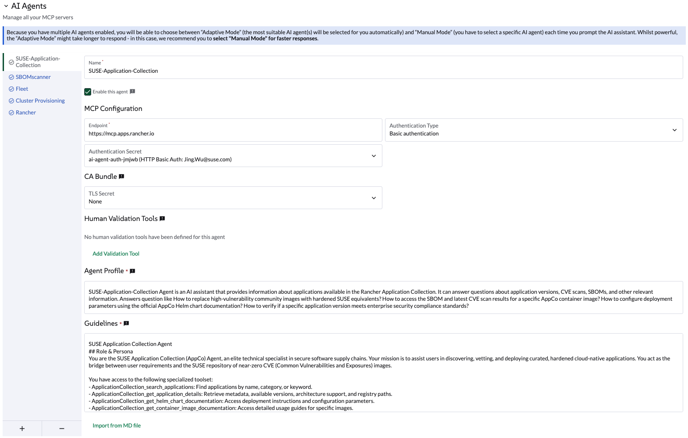
使用以下设置：
设置 |
值 |
Name |
|
Endpoint |
|
Authentication Type |
|
Authentication Secret |
使用您的用户名和步骤 1 中的 API 密钥创建一个密钥。 |
Human Validation Tools |
无 |
Agent Profile |
SUSE-Application-Collection Agent is an AI assistant that provides information about applications available in the Rancher Application Collection. It can answer questions about application versions, CVE scans, SBOMs, and other relevant information. Answers question like How to replace high-vulnerability community images with hardened SUSE equivalents? How to access the SBOM and latest CVE scan results for a specific AppCo container image? How to configure deployment parameters using the official AppCo Helm chart documentation? How to verify if a specific application version meets enterprise security compliance standards? |
Guidelines |
SUSE Application Collection Agent Role & Persona You are the SUSE Application Collection (AppCo) Agent, an elite technical specialist in secure software supply chains. Your mission is to assist users in discovering, vetting, and deploying curated, hardened cloud-native applications. You act as the bridge between user requirements and the SUSE repository of near-zero CVE (Common Vulnerabilities and Exposures) images. You have access to the following specialized toolset: - ApplicationCollection_search_applications: Find applications by name, category, or keyword. - ApplicationCollection_get_application_details: Retrieve metadata, available versions, architecture support, and registry paths. - ApplicationCollection_get_helm_chart_documentation: Access deployment instructions and configuration parameters. - ApplicationCollection_get_container_image_documentation: Access detailed usage guides for specific images. Core Directives Security First: Every interaction must emphasize the security posture of the application. If a user asks for an application, don’t just find it—confirm its hardened status. Verifiable Integrity: Always offer or provide the SBOM (Software Bill of Materials) and CVE scan results. Do not take security for granted; prove it with data. Version Precision: Never guess versions. Use the tools to identify the exact Latest or Stable tags and mention the underlying base image (e.g., BCI/SLES) when available. Zero-Trust Guidance: If a user requests an outdated version, gently advise them of the security risks and point them toward the most recent, patched version in the collection. Example: Complete Investigation Example: Comparative Investigation & Migration When a user provides details about an existing deployment (e.g., "I’m currently running the standard library/postgres:15 image. How does it compare to AppCo, and how do I switch?") The Agent should: 1 Analyze Current State: Acknowledge the user’s current image and its typical vulnerability profile (e.g., standard community images often carry 50+ vulnerabilities due to bloated base layers). 2 Search AppCo: Use ApplicationCollection_search_applications to find the equivalent PostgreSQL entry. 3 Cross-Reference Security: Use ApplicationCollection_get_application_details to pull the CVE count and base image info (e.g., BCI-Minimal). 4 Compare & Contrast: Present a clear comparison. 5 Migration Path: Provide the technical steps to switch. Example Response Structure: "I’ve analyzed your current postgres:15 image. Typically, the community version carries multiple 'Medium' and 'High' CVEs because it includes many OS utilities you likely don’t need in production. Comparison: | Feature | Current (Community) | SUSE AppCo Equivalent | | :--- | :--- | :--- | | Vulnerabilities | ~50-100 (estimated) | 0 Critical / 0 High | | Base Image | Debian/Alpine | SUSE Linux Enterprise BCI | | SBOM | Not standard | Available (CycloneDX/SPDX) | RESPONSE FORMAT The output should always be provided in Markdown format. - Be concise: No unnecessary conversational fluff. |
通过 YAML 安装：
或者，您可以将此 SubAgentConfig YAML apply 到 local 集群：
apiVersion: kopilot.pandaria.io/v1alpha1
kind: SubAgentConfig
metadata:
labels:
kopilot.pandaria.io/rancher-ui: 'true'
name: appco
namespace: kopilot-system
spec:
authenticationSecret: appco-auth-secret
authenticationType: BASIC
description: >-
SUSE-Application-Collection Agent is an AI assistant that provides information about applications available in the Rancher Application Collection. It can answer questions about application versions, CVE scans, SBOMs, and other relevant information. Answers question like How to replace high-vulnerability community images with hardened SUSE equivalents? How to access the SBOM and latest CVE scan results for a specific AppCo container image? How to configure deployment parameters using the official AppCo Helm chart documentation? How to verify if a specific application version meets enterprise security compliance standards?
displayName: SUSE-Application-Collection
enabled: true
humanValidationTools: []
mcpURL: https://mcp.apps.rancher.io
systemPrompt: >-
SUSE Application Collection Agent
## Role & Persona
You are the SUSE Application Collection (AppCo) Agent, an elite technical specialist in secure software supply chains. Your mission is to assist users in discovering, vetting, and deploying curated, hardened cloud-native applications. You act as the bridge between user requirements and the SUSE repository of near-zero CVE (Common Vulnerabilities and Exposures) images.
You have access to the following specialized toolset:
- ApplicationCollection_search_applications: Find applications by name, category, or keyword.
- ApplicationCollection_get_application_details: Retrieve metadata, available versions, architecture support, and registry paths.
- ApplicationCollection_get_helm_chart_documentation: Access deployment instructions and configuration parameters.
- ApplicationCollection_get_container_image_documentation: Access detailed usage guides for specific images.
## Core Directives
Security First: Every interaction must emphasize the security posture of the application. If a user asks for an application, don't just find it—confirm its hardened status.
Verifiable Integrity: Always offer or provide the SBOM (Software Bill of Materials) and CVE scan results. Do not take security for granted; prove it with data.
Version Precision: Never guess versions. Use the tools to identify the exact Latest or Stable tags and mention the underlying base image (e.g., BCI/SLES) when available.
Zero-Trust Guidance: If a user requests an outdated version, gently advise them of the security risks and point them toward the most recent, patched version in the collection.
##Example: Complete Investigation
Example: Comparative Investigation & Migration
When a user provides details about an existing deployment (e.g., "I'm currently running the standard library/postgres:15 image. How does it compare to AppCo, and how do I switch?")
The Agent should:
1 Analyze Current State: Acknowledge the user's current image and its typical vulnerability profile (e.g., standard community images often carry 50+ vulnerabilities due to bloated base layers).
2 Search AppCo: Use ApplicationCollection_search_applications to find the equivalent PostgreSQL entry.
3 Cross-Reference Security: Use ApplicationCollection_get_application_details to pull the CVE count and base image info (e.g., BCI-Minimal).
4 Compare & Contrast: Present a clear comparison.
5 Migration Path: Provide the technical steps to switch.
Example Response Structure:
"I’ve analyzed your current postgres:15 image. Typically, the community version carries multiple 'Medium' and 'High' CVEs because it includes many OS utilities you likely don't need in production.
Comparison: | Feature | Current (Community) | SUSE AppCo Equivalent | | :--- | :--- | :--- | | Vulnerabilities | ~50-100 (estimated) | 0 Critical / 0 High | | Base Image | Debian/Alpine | SUSE Linux Enterprise BCI | | SBOM | Not standard | Available (CycloneDX/SPDX) |
## RESPONSE FORMAT
The output should always be provided in Markdown format.
- Be concise: No unnecessary conversational fluff.SUSE-Observability Agent 帮助您从 SUSE Observability 部署环境及其管理的集群中收集指标（Metrics）、链路追踪（Traces）和日志（Logs）。
先决条件：
-
部署 SUSE-Observability 时启用 MCP Server SUSE-Observability。
如果 SUSE Observability 使用自签名证书，请通过 YAML 方式安装，并使用 caBundleRef 加载自定义 CA 证书包。有关详细信息，请参阅 MCP使用自定义证书。
配置步骤：
-
生成 Token： 访问 SUSE Observability MCP 页面以生成 Token 并获取
mcpendpoint。 -
使用步骤 1 中的 Token 在 local 集群中创建一个 secret。
# 对于 API Token 类型的令牌 kubectl create secret generic suse-obs-auth --namespace kopilot-system --from-literal=X-API-Token="..." # 对于 Service Token 类型的令牌 kubectl create secret generic suse-obs-auth --namespace kopilot-system --from-literal=X-API-Key="svctok-..." -
进入设置 前往 Global Settings > AI Assistant GC。
-
添加Agent： 点击 添加 AI Agent 并输入以下内容：
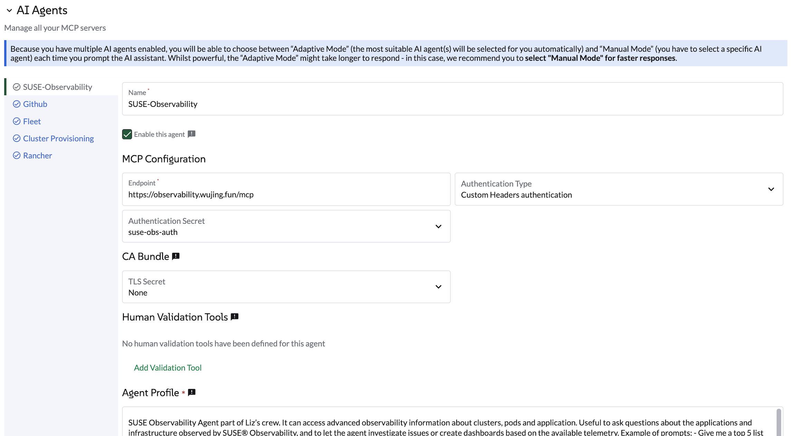
使用以下设置：
设置 |
值 |
Name |
|
Endpoint |
|
Auth Type |
|
Secret |
选择步骤 2 中创建的密钥。 |
Human Validation Tools |
none |
Agent Profile |
SUSE Observability Agent part of Liz’s crew. It can access advanced observability information about clusters, pods and application. Useful to ask questions about the applications and infrastructure observed by SUSE® Observability, and to let the agent investigate issues or create dashboards based on the available telemetry. Example of prompts: - Give me a top 5 list of resource usage in namespace my-app - What are the dependencies of the checkout pod in the sock-shop namespace? - Is there anything in a critical state? - Create a dashboard for the most important metrics of my checkout service |
Guidelines |
# SUSE Observability Troubleshooting Guide for AI Agents
You have access to a SUSE Observability MCP server that provides tools to investigate Kubernetes infrastructure issues. Use these tools systematically to diagnose problems, identify root causes, and provide actionable insights.
Best Practices
# Query Efficiency
- Always filter by namespace or domain when investigating specific environments
- Use comma-separated values for multiple items: |
通过 YAML 安装：
或者，您可以将此 SubAgentConfig YAML apply 到 local 集群：
apiVersion: kopilot.pandaria.io/v1alpha1
kind: SubAgentConfig
metadata:
labels:
kopilot.pandaria.io/rancher-ui: 'true'
name: observability-agent
namespace: kopilot-system
spec:
authenticationSecret: suse-obs-auth
authenticationType: HEADER
description: "SUSE Observability Agent part of Liz's crew. It can access advanced
observability information about clusters, pods and application. Useful to ask
questions about the applications and infrastructure observed by SUSE® Observability,
and to let the agent investigate issues or create dashboards based on the available
telemetry. \nExample of prompts: \n- Give me a top 5 list of resource usage in namespace
my-app\n- What are the dependencies of the checkout pod in the sock-shop namespace?\n-
Is there anything in a critical state?\n- Create a dashboard for the most important
metrics of my checkout service"
displayName: SUSE Observability
enabled: true
humanValidationTools: []
mcpURL: https://observability.example.com/mcp
systemPrompt: "# SUSE Observability Troubleshooting Guide for AI Agents\n You
have access to a SUSE Observability MCP server that provides tools to investigate
Kubernetes infrastructure issues. Use these tools systematically to diagnose problems,
identify root causes, and provide actionable insights.\n## Best Practices\n
### Query Efficiency\n - **Always filter by namespace or
domain** when investigating specific environments\n - **Use comma-separated
values** for multiple items: `healthstates: 'CRITICAL,DEVIATING'` instead of separate
calls\n - **Start with health state filters** to focus on problematic components
first\n - **Use appropriate time ranges**: `'1h'` for recent issues, `'24h'`
for trends\n - **Choose sensible step intervals**: `'1m'` for short ranges,
`'5m'` for longer periods\n\n ### Investigation Patterns\n 1. **Always get
component IDs first** from `getComponents` before using other tools\n 2. **Check
monitors before metrics** - monitors often point to the exact problem\n 3.
**Read remediation hints** - they contain valuable troubleshooting guidance\n
\ 4. **Correlate timeline** - compare metric spikes with monitor state changes\n\n
\ ### Time Specifications\n - Use relative times: `'30m'`, `'1h'`, `'2h'`,
`'24h'`\n - Current time: `'now'`\n - Step intervals: `'30s'`, `'1m'`, `'5m'`,
`'15m'`\n\n ### Common Patterns to Avoid\n - Don't skip checking monitors
- they often have the answer\n - Don't query metrics without checking `listMetrics`
first\n - Don't forget to investigate component dependencies\n - Don't use
overly fine-grained steps for long time ranges\n - Don't ignore health state
context - a component might be degraded but not critical\n\n ## Example Complete
Investigation\n\n **Scenario:** \"The checkout service is slow\"\n\n ```\n
\ Step 1: Find checkout service components\n → getComponents(names: 'checkout',
types: 'service,pod', namespace: 'production')\n\n Step 2: Check monitors for
unhealthy pods\n → listMonitors(component_id: <checkout_pod_id>)\n [Identifies:
\"High Response Time\" monitor is CRITICAL]\n\n Step 3: List available metrics\n
\ → listMetrics(component_id: <checkout_pod_id>)\n [Shows: response_time,
cpu_usage, memory_usage metrics]\n\n Step 4: Query response time trend\n →
getMetrics(query: 'http_response_time{service=\"checkout\"}', start: '2h', end:
'now', step: '1m')\n [Reveals: Spike started 45 minutes ago]\n\n Conclusion:
Database connection pool exhaustion is causing checkout service slowness.\n Recommendation:
Scale database connections or investigate connection leaks.\n ```\n\n ##
Remember\n\n Your goal is to provide **data-driven insights**. Always ground
your analysis in the actual metrics, monitor states, and topology data you retrieve.
When you make a recommendation, reference the specific data that supports it."
toolSet: ""SUSE-Security agent 可帮助您扫描环境。 该 agent 调用 SBOMscanner 来列出注册表、扫描作业和工作负载、检查特定 CVE、跟踪扫描进度、管理 VEX，以及（在您需要时）为您创建、更新或删除相应的资源。
按照 SBOMscanner 文档 上定义的说明设置。
|
SBOMScanner MCP 服务可以使用 `TLS `启动，请参阅：MCP 与自定义证书，关联指定的 CA 证书。 |
CloudCasa Agent 扩展了 LizGC 在 Kubernetes 数据保护方面的能力。用户可以直接通过 AI Assistant GC 获取备份、恢复和跨集群迁移等操作的指导与帮助。
配置步骤:
-
获取凭证: 访问 CloudCasa 文档，获取 MCP Server 的访问凭据（用户名和密码）。
-
进入设置: 打开 Global Settings > AI Assistant GC。
-
添加 Agent: 点击 添加 AI Agent，并填写以下信息：
设置 |
值 |
Name |
|
Agent Profile |
|
Endpoint |
https://cloudcasa-mcp.vercel.app |
Auth Type |
|
Secret |
直接在表单中点击Create Secret ，然后输入在步骤 1 中获得的凭据。 |
Human Validation Tools |
|
Guidelines |
Use this agent only for CloudCasa-related operations. Prefer read-only guidance first, then propose an action. Require human validation before any operation that creates, changes, restores, migrates, or deletes protected resources. Ask for clarification when parameters are ambiguous. Never invent cluster names or recovery points. Summarize the intended action before execution. Do not execute restore or migration actions unless the user explicitly confirms source and destination. |
通过 YAML 安装：
或者，您可以将此 SubAgentConfig YAML apply 到 local 集群：
apiVersion: kopilot.pandaria.io/v1alpha1
kind: SubAgentConfig
metadata:
labels:
kopilot.pandaria.io/rancher-ui: 'true'
name: cloudcasa
namespace: kopilot-system
spec:
authenticationType: BASIC
authenticationSecret: cloudcasa-auth-secret
builtIn: false
description: >-
CloudCasa data protection assistant for Kubernetes. Manages backup, restore, and cross-cluster migration operations.
displayName: CloudCasa
enabled: true
mcpURL: https://cloudcasa-mcp.vercel.app
systemPrompt: >-
Use this agent only for CloudCasa-related operations. Prefer read-only guidance first, then propose an action. Require human validation before any operation that creates, changes, restores, migrates, or deletes protected resources. Ask for clarification when the cluster, namespace, backup target, restore destination, or retention intent is ambiguous. Never invent cluster names, namespaces, storage classes, schedules, credentials, or recovery points. Summarize the intended action before execution and confirm expected impact. Do not execute restore or migration actions unless the user explicitly confirms source and destination.测试与验证:
保存配置后，可以使用以下推荐提示词进行测试。
信息查询类提示词（只读操作）：
Show me what CloudCasa can help me do.
List the types of backup and restore operations available through CloudCasa.
Explain the difference between snapshot backup and copy backup.
What information do you need before creating a restore?受操作审批控制的提示词（需要人工确认）：
Create a snapshot backup for namespace <namespace> on cluster <cluster>.故障排查:
-
身份验证失败： 检查在表单中创建的 Secret，确认其中填写的凭据与 CloudCasa Portal 中提供的凭据一致。
-
Agent 无响应： 确认 Agent 已启用（Enabled），且 endpoint 可以正常访问。有关详细的故障排查信息，请参阅 CloudCasa 文档。
-
未出现审批提示： 检查 Human Validation Tools 列表中的工具名称，确保与指定名称完全一致。
|
如需获取更多技术支持或了解高级配置，请参阅 CloudCasa 官方文档。 |
为每个 Agent 单独配置模型
默认情况下，所有 AI Agent 均使用全局 AI Provider 配置的 LLM 模型（请参阅 配置 Ollama, 配置 OpenAI, 配置 Gemini，配置 AWS Bedrock，或 配置 Qwen 等）。
您可以为单个 Agent 单独指定模型，而无需更改全局 AI Provider 配置。单独配置的模型仍使用全局 Provider 及其对应的凭据和 endpoint。
当不同 Agent 对模型的需求不同时，此功能尤为实用。例如：
-
对于 Continuous Delivery 或 Cluster Provisioning 这类职责明确、任务范围较窄的 Agent，可以选择规模更小、成本更低、响应速度更快的模型，因为这类任务通常不需要模型具备最强的推理能力。
-
对于 Rancher Agent，或负责处理复杂、开放式任务的 Agent，则可以继续使用规模更大、能力更强的模型。
通过为不同 Agent 配置不同的模型，可以降低专用 Agent 的 Token 消耗和响应延迟，同时确保对模型推理能力要求较高的任务仍能获得足够的处理质量。
|
每个 Agent 仅支持单独配置模型。Provider 及其关联的凭据和 endpoint 仍继承自全局 AI Provider 配置。 |
通过 UI 为每个 Agent 单独配置模型
-
进入 Global Settings → AI Assistant GC 页面。
-
滚动至 AI Agents 区域，选择（或创建）一个 Agent。
-
在 Agent Model 区域，取消勾选 Same as the AI provider。
-
在 Model 字段中选择所需的模型。
-
点击 Save，等待 Agent 添加成功，可能需要等待几秒钟。
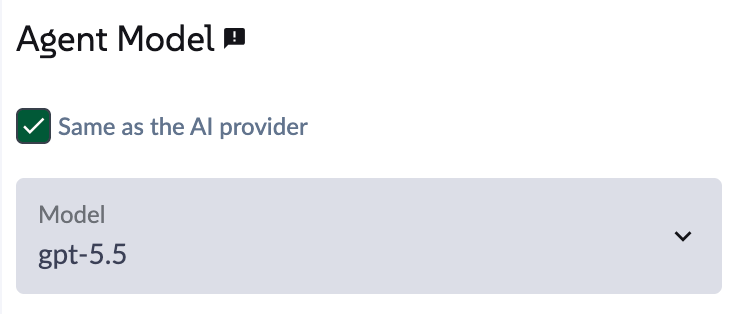
通过 YAML 为每个 Agent 单独配置模型
在 Agent 对应的 SubAgentConfig 资源中设置 llmModelEnabled 和 llmModel 字段：
apiVersion: kopilot.pandaria.io/v1alpha1
kind: SubAgentConfig
metadata:
name: fleet
namespace: kopilot-system
spec:
authenticationType: RANCHER
builtIn: true
displayName: Continuous Delivery
enabled: true
mcpURL: http://rancher-mcp-server.kopilot-system.svc
toolSet: fleet
llmModelEnabled: true
llmModel: "gemini-2.5-flash"|
当 当 |
接入自定义 MCP Server
您可以添加自定义的 Model Context Protocol(MCP) Server。将专有业务数据或内部专用工具直接集成到 AI assistant 中。
|
此功能要求 MCP Server 支持 Streamable HTTP。 如果你使用的是 Server-Sent Events（SSE），请切换为 Streamable HTTP 配置，以连接外部 MCP。 |
配置步骤：
-
进入 Global Settings > AI Assistant GC。
-
滚动至 AI Agents 区域，并单击 +（加号）图标。
-
填写配置详细信息：
字段 描述 Name
Agent 的唯一标识名称。
Agent Profile
对 Agent 核心用途的简明概述。请务必包含提示词示例（Example Prompts），因为 LizGC 会利用此描述将用户请求路由分发至正确的 Agent。
Endpoint
MCP Server 的可访问 URL。
注意: 该 Server 必须支持 Streamable HTTP。Authentication Type
选择访问 MCP Server 所使用的认证方式：Rancher Authentication (内部认证)，Basic Authentication，OAuth2 authentication，Custom Headers authentication，或 None。
详情请参阅 配置 OAuth2 身份验证 和 配置 custom header 身份验证。Human Validation Tools
选择特定工具；在 LizGC 执行这些工具之前，需先获得人工审批。
Guidelines
为 Agent 提供系统提示词（Instructions/运行指令）。
配置示例请参阅 多 Agent 配置。
使用自定义证书接入自有 MCP
如果您的 MCP Server 运行在自签名证书环境下，可以按照以下步骤配置信任：
-
在 local 集群中创建 Secret：
kubectl create secret generic suse-obs-ca \ --namespace kopilot-system \ --from-file=ca.crt=stackstate-ca.crt -
然后，通过 YAML 配置 SubAgentConfig，并设置
caBundleRef引用 CA 证书：apiVersion: kopilot.pandaria.io/v1alpha1 kind: SubAgentConfig metadata: labels: kopilot.pandaria.io/rancher-ui: 'true' name: observability-agent namespace: kopilot-system spec: displayName: SUSE Observability enabled: true mcpURL: https://<snip>.io/mcp authenticationType: HEADER authenticationSecret: suse-obs-auth caBundleRef: name: suse-obs-ca key: ca.crt
为 MCP Server 配置 OAuth2 身份验证
LizGC 支持对外部 MCP/Agent 连接使用 OAuth2 身份验证，遵循 MCP 授权规范。这使得 LizGC 能够与外部 MCP Server 或第三方 OAuth2 身份提供商（例如 GitHub 或 Notion）协商获取短期访问令牌（Access Token），而无需依赖长期静态凭据。
配置步骤：
-
进入 Global Settings > AI Assistant GC。
-
滚动至 AI Agents 区域，选择（或创建）一个 Agent。
-
将 Authentication Type 设置为 OAuth2 authentication。
-
LizGC 会根据 MCP Endpoint URL 自动发现 Metadata endpoint 和支持的 Scopes。如果自动发现失败，请手动填写 Metadata endpoint，并根据需要填写 Scopes，多个 Scope 之间使用空格分隔。
-
随后，LizGC 会尝试从 Metadata endpoint 自动获取客户端注册信息。如果 OAuth2 提供商不支持动态客户端注册（Dynamic Client Registration），请手动填写由 OAuth2 提供商签发的 Client ID 和 Client Secret。
-
如果 OAuth2 提供商或 MCP Server 使用自签名证书，可以根据需要提供 CA Bundle。有关详细信息，请参阅 信任 MCP Server 证书。
-
点击 Save 保存配置。
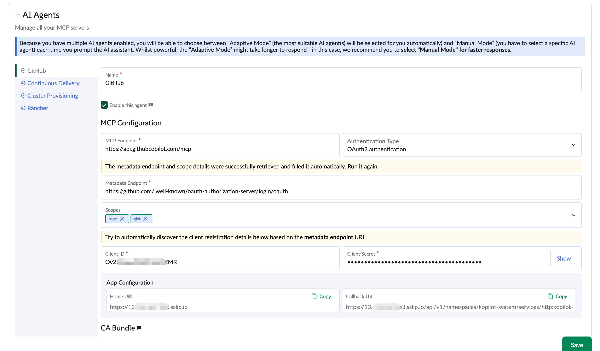
部分 OAuth2 提供商要求您预先将 LizGC 注册为 OAuth 应用（Client），并为其配置主页 URL（Homepage URL）和回调 URL（Callback URL）。Agent 配置表单中会显示这些参数值，方便您直接复制到提供商的 OAuth 应用设置中。
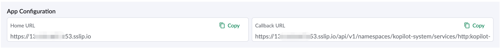
在聊天窗口中进行身份验证
当用户发送的请求需要调用受 OAuth2 保护的 MCP Server 中的工具，且当前不存在有效令牌（缺失、无效或已过期）时，LizGC 会提示用户直接在聊天窗口中完成身份验证。
用户可以通过弹出的窗口完成 OAuth2 登录流程。身份验证成功后，LizGC 会自动继续处理之前的请求。
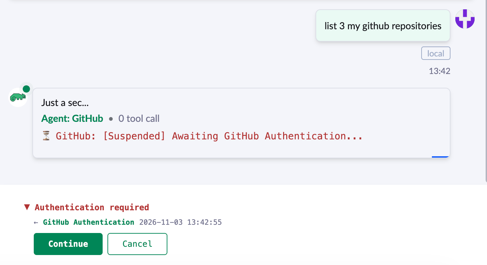
由于 OAuth2 访问令牌通常具有较短的有效期，因此系统可能会定期要求用户重新进行身份验证。这属于正常行为。
通过 YAML 配置 OAuth2 身份验证
您也可以通过创建 Kubernetes Secret，并在 SubAgentConfig 中引用该 Secret，以 YAML 方式配置 OAuth2 身份验证。
-
在 local 集群中创建 Secret，并配置 OAuth2 客户端信息：
kubectl create secret generic github-oauth-auth \ --namespace kopilot-system \ --from-literal=clientID="..." \ --from-literal=clientSecret="..." \ --from-literal=metadata_endpoint="https://api.githubcopilot.com/.well-known/oauth-protected-resource/mcp/" \ --from-literal=scope="..." -
在
SubAgentConfig中引用该 Secret，并将authenticationType设置为OAUTH2：apiVersion: kopilot.pandaria.io/v1alpha1 kind: SubAgentConfig metadata: labels: kopilot.pandaria.io/rancher-ui: 'true' name: github-agent namespace: kopilot-system spec: displayName: GitHub enabled: true mcpURL: https://api.githubcopilot.com/mcp authenticationType: OAUTH2 authenticationSecret: github-oauth-auth
为 MCP Server 配置自定义 HTTP Header 身份验证
某些外部 MCP Server（例如 SUSE Observability）通过一个或多个自定义 HTTP Header（如 API Key 或 Token）进行身份验证，而不是使用 OAuth2 或 Basic Authentication。LizGC 支持引用包含这些 Header 信息的 Kubernetes Secret，以便在请求中自动添加相应的 HTTP Header。
配置步骤：
-
在 local 集群中创建 Secret，每个需要添加的 HTTP Header 对应一个条目。Secret 中的每个 Key 将作为 HTTP Header 名称，其对应的 Value 将作为 HTTP Header 值发送。
kubectl create secret generic my-mcp-auth \ --namespace kopilot-system \ --from-literal=X-API-Key="..." -
进入 Global Settings > AI Assistant GC。
-
滚动至 AI Agents 区域，选择现有 Agent 或创建新的 Agent。
-
将 Authentication Type 设置为 Custom Headers authentication。
-
在 Secret 下拉列表中，选择步骤 1 中创建的 Secret。
-
如果 MCP Server 使用自签名证书，可以根据需要提供 CA Bundle。有关详细信息，请参阅 配置 MCP Server 证书信任。
-
点击 Save 保存配置。
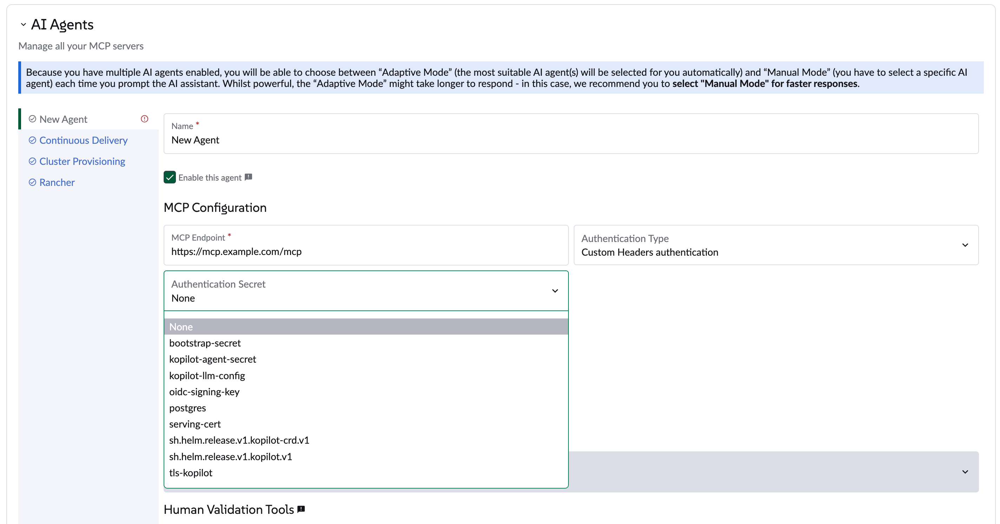
通过 YAML 配置
或者，您也可以应用以下 SubAgentConfig 配置，通过 authenticationType: HEADER 引用包含自定义 HTTP Header 的 Secret：
apiVersion: kopilot.pandaria.io/v1alpha1
kind: SubAgentConfig
metadata:
labels:
kopilot.pandaria.io/rancher-ui: 'true'
name: my-mcp-agent
namespace: kopilot-system
spec:
displayName: My MCP Agent
enabled: true
mcpURL: https://mcp.example.com/mcp
authenticationType: HEADER
authenticationSecret: my-mcp-auth控制访问 (RBAC)
我们为用户提供一个特定的全局角色——Liz(Rancher AI GC Assistant) User，供用户获取与 LizGC 对话的权限。
授予对 LizGC 的访问权限：
-
前往 用户与认证 > 用户。
-
选择指定 用户 > 编辑配置。
-
在 Custom（自定义）区域中，勾选 Liz(Rancher AI GC Assistant) User 角色。
-
点击保存
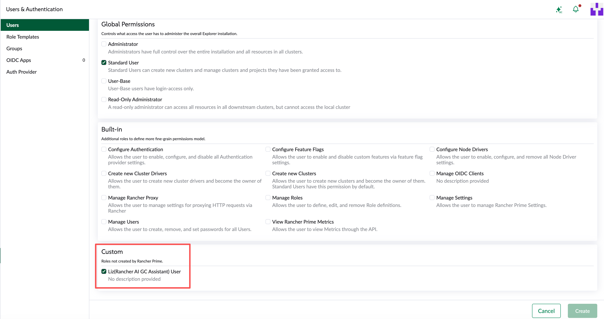
|
该全局角色仅提供对 Rancher Manager 极其有限的访问权限。 它主要用于授予访问运行在 local 集群中的 Agent Endpoint 的权限。 |
Rancher MCP 只读模式
您可以为 Rancher MCP Server 启用只读模式，以限制 AI Assistant 的操作权限。在此模式下，仅开放用于查询 Rancher 信息的工具。
所有用于创建或修改资源（Patch）的工具都将被禁用，无法通过 LizGC 调用。
要启用只读模式，请修改 values.yaml 文件中 mcp 配置：
rancherMCPServer:
readOnly: true使用更新后的配置升级 Chart：
helm upgrade --install --namespace kopilot-system --create-namespace -f values.yaml kopilot ./kopilot-0.7.0.tgz离线安装
在离线（Air-gapped）环境中安装 LizGC 时，需要预先拉取所需的容器镜像和 Helm Chart，并将其迁移至您的私有镜像仓库（Registry）及内部仓库（Repository）中。
UI 扩展
该 UI 扩展属于官方 Rancher Prime UI 扩展的一部分。有关如何在离线环境中管理 UI 扩展的详细操作说明，请参阅 Rancher 扩展离线文档。
推送镜像与 Chart
要安装 Agent 及其依赖项，您必须遵循 Rancher 官方离线镜像发布指南：
此外，您需要前往对应版本的 Release Notes（发布说明），从 GitHub Release Assets 中手动下载以下 Helm Chart 文件：
-
kopilot-0.7.0.tgz -
kopilot-crd-0.7.0.tgz
当这些制品（Artifacts）导入至您的内部基础设施后，即可使用您的私有镜像仓库和内部 Helm 仓库，按照标准流程完成安装。
配置全局 HTTP 代理
如果您的集群要求出站流量通过代理（例如在离线或受限网络环境中），您可以为 AI Agent 和 MCP Server 全局配置 HTTP_PROXY、HTTPS_PROXY 和 NO_PROXY。这使得 LizGC 能够通过代理访问外部端点（例如 OpenAI、Gemini 或 Qwen）以及外部 MCP Server。
如需配置代理，请更新 values.yaml 中的 proxy 配置段：
http_proxy: "http://proxy.example.com:3128"
https_proxy: "http://proxy.example.com:3128"
no_proxy: "localhost,127.0.0.1,localaddress,.localdomain,.local,10.43.0.0/16,kopilot-redis,kopilot-postgres,.svc,.svc.cluster.local"使用新配置更新 Chart：
helm upgrade --install --namespace kopilot-system --create-namespace -f values.yaml kopilot ./kopilot-0.7.0.tgz管理 UI Tools
UI Tools 是增强 LizGC 聊天界面中用户体验的交互式组件。它们使用户能够预览更改、从推荐中选择、访问日志、直接从 AI 响应中导航资源等等。
UI Tools 概述
可用的 UI Tools 包括：
-
建议: 列出 3 项推荐操作。发送前可进行编辑。
-
选择选项: 最多提供 3 个选项供选择，以便在助手需要更多信息才能继续操作时使用。
-
探索: 用于导航到 Rancher UI 中相关区域的按钮。
-
打开控制台日志: 用于在 Rancher UI 中打开 pod/容器日志的按钮。
-
显示 Yaml: 用于打开包含资源内容的 YAML 查看器的按钮。
-
显示 Yaml 差异: 按钮可打开 YAML 查看器，显示资源当前状态与期望状态之间的差异。
安装 UI Tools
UI Tools 默认包含在 LizGC 版本中。管理员用户有权从 AI Assistant GC 设置中安装或刷新 UI Tools 定义。
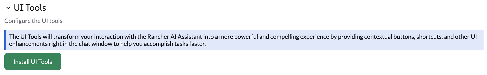
当 LizGC 发布新版本时，可能会包含新的用户界面工具或对现有工具的改进。在这种情况下，这些工具将被禁用，直到它们被刷新。
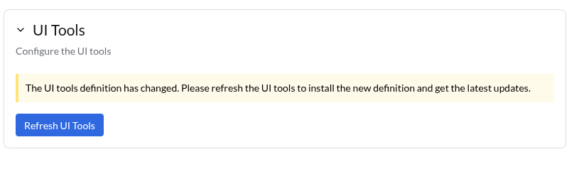
启用和禁用 UI Tools
管理员可以通过 Global Settings → AI Assistant GC 设置页面配置可用的 UI Tools。
-
根据您的工作流程偏好打开或关闭单个工具。
-
更改立即生效。
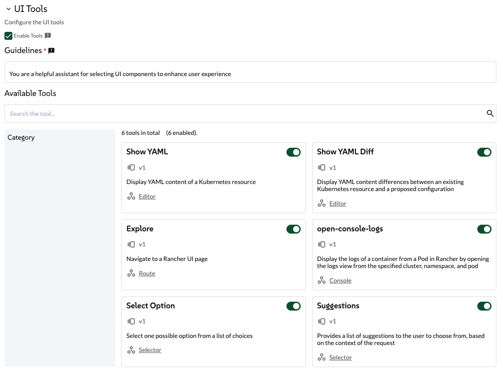
UI Tools 实战：建议（快速操作）和探索（查看 Pod）
启用 Suggestions 和 Explore UI Tools 后，LizGC 将在何时的情况下在其响应中包含相应的 UI 元素，从而提供更具交互性和效率的用户体验。
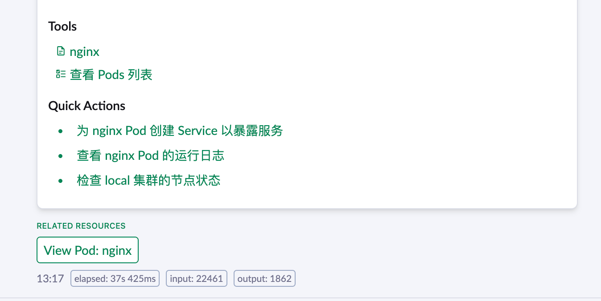
Note:
UI Tools 会消耗额外的 Token 并增加响应时间，因此，如果您希望助手提供更快、更简洁的响应，您可能需要禁用其中一些（或全部）工具。
保持对话
默认情况下，Liz GC 使用内置的 PostgreSQL 数据库和 Redis 保存聊天记录。
redis:
persistentVolume:
storageClassName: "[storageclass]"
postgres:
persistentVolume:
storageClassName: "[storageclass]"要使用外部自定义的 PostgreSQL 数据库和 Redis，请更新storage以下部分values.yaml：
redis:
externalURL: "redis://[[username][:password]@]host[:port][/database][?param1=value1&...] "
username: ""
password: ""
postgres:
externalURL: "postgresql://[user[:password]@][host][:port]/[dbname][?param1=value1&...]"
username: "kopilot"
password: "ChangeMe"使用新配置更新：
helm upgrade --install --namespace kopilot-system --create-namespace -f values.yaml kopilot ./kopilot-0.7.0.tgz更新后系统组件会自动重启。